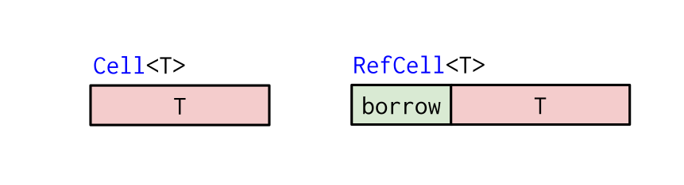

Свързани списъци, част 2
16 ноември 2021
Административни неща
- Домашно 2
Преговор: Rc
Reference counter

Преговор: Rc
use std::rc::Rc;
fn main() {
let first = Rc::new(String::from("foobar"));
let second = Rc::clone(&first);
println!("{}", first);
println!("{}", second);
}foobar foobar
use std::rc::Rc;
fn main() {
let first = Rc::new(String::from("foobar"));
let second = Rc::clone(&first);
println!("{}", first);
println!("{}", second);
}
Не позволява да взимаме mutable reference към пазената стойност
Преговор: Cell, RefCell

Преговор: RefCell
use std::cell::RefCell;
fn main() {
let cell = RefCell::new(String::from("foo")); // няма `mut`
println!("{}", cell.borrow()); // -> Ref<String>
{
let mut r = cell.borrow_mut(); // -> RefMut<String>
r.push_str("bar");
}
println!("{}", cell.borrow()); // -> Ref<String>
}foo foobar
use std::cell::RefCell;
fn main() {
let cell = RefCell::new(String::from("foo")); // няма `mut`
println!("{}", cell.borrow()); // -> Ref
{
let mut r = cell.borrow_mut(); // -> RefMut
r.push_str("bar");
}
println!("{}", cell.borrow()); // -> Ref
}
- Пак не можем да вземем mutable reference, освен временно, чрез
RefMut - Panic-ва at runtime, ако сбъркаме нещо
Преговор: Raw pointers
let raw_const_ptr: *const u32 = &1;
unsafe {
println!("{}", *raw_const_ptr);
}
let raw_mut_ptr: *mut u32 = &mut 1;
unsafe {
*raw_mut_ptr += 1;
println!("{}", *raw_mut_ptr);
}1 2
fn main() {
let raw_const_ptr: *const u32 = &1;
unsafe {
println!("{}", *raw_const_ptr);
}
let raw_mut_ptr: *mut u32 = &mut 1;
unsafe {
*raw_mut_ptr += 1;
println!("{}", *raw_mut_ptr);
}
}
Learning Rust With Entirely Too Many Linked Lists
Оригиналния източник: https://rust-unofficial.github.io/too-many-lists/
Пълния код: https://github.com/rust-unofficial/too-many-lists/tree/master/lists
Тези слайдове ще съдържат само кратки обобщения на интересни части от кода.
Persistent stack
Списък, който е напълно immutable. "Добавяне" на елемент няма, просто се конструира нов списък.
При това конструиране обаче, се споделя предишното тяло. Това означава, че, дори да създаваме "копия" на списъците, това не води до копиране на потенциално десетки хиляди елементи.
// list1 -> A ---v
// list2 ------> B -> C -> D
// list3 -> X ---^Още информация може да си намерите в Wikipedia, ако сте любопитни. Популярни са за езици, които наблягат на паралелизъм (haskell, erlang/elixir, clojure), понеже mutability върху shared memory е сложно в multithreaded среди.
Append
Този път не викаме take, понеже не искаме ownership -- може нещо друго да сочи към главата. Използваме Rc::clone, за да вземем наш си Rc, който сочи към същата памет.
pub struct List<T> { head: Option<Rc<Node<T>>> }
struct Node<T> { value: T, next: Option<Rc<Node<T>>>, }
pub fn append(&self, value: T) -> Self {
let new_node = Rc::new(Node {
value: value,
next: self.head.as_ref().map(|node| Rc::clone(node)),
});
List { head: Some(new_node) }
}Append
Спокойно можем да опростим map-а, използвайки Option::clone(). Клонирането на option просто вика clone на съдържанието му.
let new_head = self.head.as_ref().map(|node| Rc::clone(node));
// Еквивалентно на:
let new_head = self.head.clone();Append
Вземането на опашката е интересно, понеже не използваме map, а използваме and_then
pub fn tail(&self) -> Self {
List {
head: self.head.as_ref().and_then(|rc_node| rc_node.next.clone())
}
}mapочаква функцията да върне някаква стойност, която ще се пакетира вSomeand_thenочаква функцията да върнеOption. Това означава, че резултата може и да еNone, за разлика отmap.- Опашката на един списък ще е празна ако списъка е празен, но и ако списъка има само един елемент. Има логика да имаме две проверки за
None. .and_then(...)е еквивалентно на.map(...).flatten()
Rc::try_unwrap
Как да вземем стойност от Rc? Трудно. Трябва да имаме само един-единствен Rc, който сочи към стойността.
if let Ok(mut node) = Rc::try_unwrap(node) {
// Имаме пълен ownership над истинската стойност.
} else {
// Нещо друго някъде сочи към същата стойност. Не можем да я пипаме.
}Drop
impl<T> Drop for List<T> {
fn drop(&mut self) {
let mut head = self.head.take();
while let Some(node) = head {
if let Ok(mut node) = Rc::try_unwrap(node) {
head = node.next.take();
} else {
break;
}
}
}
}Проблема е, че drop-ването има същия проблем, както единичния списък: ако списъка е доста голям, то drop-ването трябва рекурсивно да деалокира неща, което може да доведе до stack overflow. Риска не е особено голям, но го има.
Горния код прави нещо доста хитро. В случай, че drop-ваме нашия списък, той започва да итерира по node-ове, и само ако това е единственото копие на node-а, го drop-ва и продължава нататък. В момента, в който се окаже, че има поне едно друго копие, деструктора спира, защото очевидно има друг списък out there, който ще се погрижи за зачистването на тази памет.
Mutable Deque
Двойносвързан списък усложнява нещата. Всеки елемент има Link напред и Link назад. Списъка има Link-ове към началото и края.
use std::rc::Rc;
use std::cell::{RefCell, Ref};
type Link<T> = Option<Rc<RefCell<Node<T>>>>;
pub struct List<T> {
head: Link<T>,
tail: Link<T>,
}
struct Node<T> {
value: T,
next: Link<T>,
prev: Link<T>,
}Mutable Deque
type Link<T> = Option<Rc<RefCell<Node<T>>>>;- Имаме нужда от
Option, както винаги, за да кодираме възможната липса на линк (празен списък, "предишния" линк на първия елемент, "следващия" линк на последния елемент) - Имаме нужда от
Rc, понеже ще имаме няколко променливи, които ще own-ват споделена стойност. - Имаме нужда от
RefCell, понеже иначе няма как да мутираме deque-а.
RefCell::borrow_mut
Клонирането на Option<Rc<T>> работи по същия начин. Новото е, че имаме нужда от (временен) mutable reference с borrow_mut, за да викаме методи и достъпваме атрибути на вътрешната му стойност.
pub fn push_front(&mut self, value: T) {
let new_head = Node::new(value) //: Rc<RefCell<Node<T>>>;
match self.head.take() {
Some(old_head) => {
old_head.borrow_mut().prev = Some(new_head.clone());
new_head.borrow_mut().next = Some(old_head);
self.head = Some(new_head);
},
None => {
self.tail = Some(new_head.clone());
self.head = Some(new_head);
}
}
}Ref
За нещастие, не можем да извадим истински reference към вътрешната стойност, и да го върнем. Методите borrow и borrow_mut не връщат &T, връщат Ref<T>
pub fn peek_front(&self) -> Option<Ref<T>> {
self.head.as_ref().map(|node| {
Ref::map(node.borrow(), |r| &r.value)
})
}Тъй като RefCell имплементира borrow-checker at runtime, това няма как да върне валиден reference, който е проверен at compile-time. Sadness.
Ref
Поне в случай, че имаме ownership над стойността, можем да я достъпим с into_inner. Все е нещо:
match Rc::try_unwrap(old_head) {
Ok(cell_node) => {
cell_node.into_inner().value
},
Err(_) => panic!("Popping a list failed, some Rc is messed up!"),
}Unsafe queue
Ако искаме да имплементираме опашка, един лесен начин е да посегнем към unsafe pointers:
pub struct List<T> {
head: Link<T>,
tail: *mut Node<T>,
}
type Link<T> = Option<Box<Node<T>>>;
struct Node<T> {
value: T,
next: Link<T>,
}В този случай, това не е чак толкова опасно, понеже го използваме в много ограничен вариант. Все пак трябва да внимаваме.
Unsafe queue
pub fn push(&mut self, value: T) {
let mut new_tail = Box::new(Node { value: value, next: None });
let raw_tail: *mut _ = &mut *new_tail;
if self.tail.is_null() {
self.head = Some(new_tail);
} else {
unsafe { (*self.tail).next = Some(new_tail); }
}
self.tail = raw_tail;
}Можем да вземем pointer директно от валиден reference чрез type coercion. Единствената unsafe операция е когато дереференцираме pointer-а, за да достъпим стойността, до която сочи.
Unsafe queue
Алтернативата на това да използваме unsafe код, е да променим цялата структура на списъка, за да позволим множествен ownership над една стойност.
В случая, единствено ни трябва втора връзка към опашката. Всички останали са си едносвързани. Не можем да използваме Box, понеже той изисква ownership. Не можем да използваме прост reference, понеже ако премахнем опашката, reference-а ще виси.
След като обещаем на компилатора да сме много внимателни, той е ок да ни даде стойност, която може да се занули и може да сочи към невалидна памет. Разбира се, ако сбъркаме, ще съборим програмата с един хубав segfault. В случая, риска вероятно си заслужава, но за по-сложни неща е добре внимателно да оценим предимствата и недостатъците.